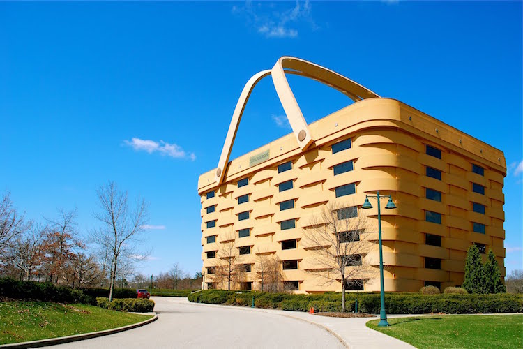
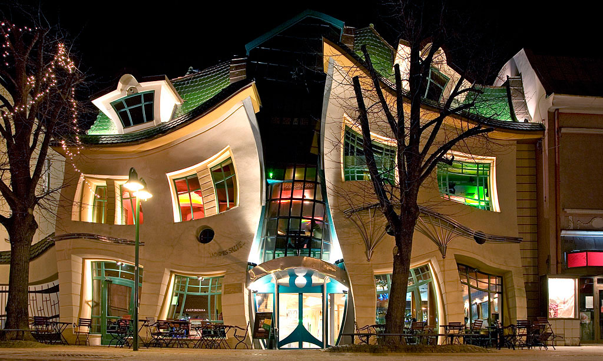
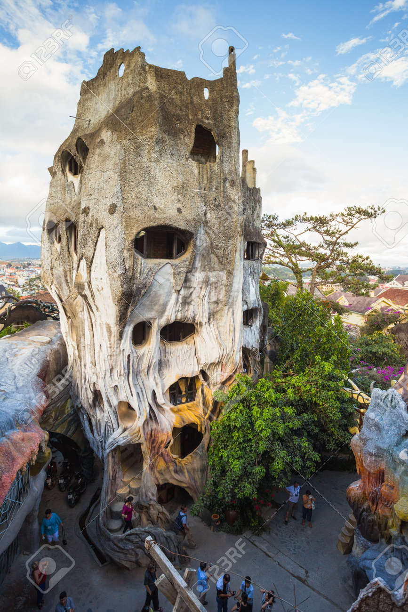

Arquitectura que desafía la lógica, la gravedad y la imaginación

La antigua sede de la empresa Longaberger es un edificio de siete pisos con la forma exacta de una cesta de mimbre gigante. Construido en 1997, es una réplica a escala 160 veces mayor de la cesta Medium Market de la compañía.

También conocida como Krzywy Domek, esta estructura parece haber sido derretida por el sol o distorsionada por un sueño de Dalí. Diseñada por los arquitectos Szotyńscy y Zalewski e inaugurada en 2004, alberga un centro comercial y se ha convertido en un icono de la ciudad costera.

Conocida oficialmente como Hang Nga Guesthouse y popularmente como “Crazy House”, esta casa de huéspedes parece salida de un cuento de hadas (o de una pesadilla). Diseñada por la arquitecta Đặng Việt Nga, combina formas orgánicas, árboles, cuevas y elementos surrealistas.